Mecanização agrícola:
Tratores e seus constituintes (P2)
Instituto Federal do Paraná
Curso Superior em Engenharia Agronômica
4 de setembro de 2026
Relembrando o motor…
Relembrando o motor…
Responsável pela transformação da energia dos combustíveis em energia mecânica (torque e rotação).
Sistema de transmissão
Sistema de transmissão
Função principal de realizar a transmissão de potência.
- Permitir o funcionamento contínuo do motor;
- Redução de rotação e aumento de torque;
- Possibilitar operações de aproximação e paradas de emergência sem danificar os componentes;
- Permitir inúmeras intensidades operacionais;
- Rotação, velocidade, torque e sentido.
- Diferenciar a rotação entre as duas rodas motrizes, traseira e dianteira (4x2 TDA);
- Acionar diferentes sistemas (TDP e hidráulico).
Sistema de transmissão
O que se busca em um trator?
Velocidade ou torque?
Um trator cujo acionamento estivesse de forma direta no eixo da roda motriz do motor ocasionaria velocidades de carros esportivos.
Ex: Um trator a 2000 rpm e com pneus traseiros de 61 cm de diâmetro, sem redução da rotação, teria uma velocidade de deslocamento de 230 km h-1.
Sistema de transmissão
A proporção de diminuição é chamada de relação de transmissão e é expressa como a razão entre a rotação do virabrequim e a do eixo das rodas motrizes.
“O número de voltas do volante do motor para cada volta da roda motriz do trator”
Sistema de transmissão
A contrapartida é o aumento significativo do torque, que é altamente desejável em aplicações agrícolas.
O sistema de transmissão opera modificando o torque e a rotação para que o trator possa desempenhar adequadamente os trabalhos agrícolas (muito torque).
Sistema de transmissão
Essa importância do sistema se traduz em seu preço.
Todo o sistema (transmissão, diferencial, eixos, freios, TDP, eixo de tração) corresponde a 25 a 30% do custo total do trator.
Sistema de transmissão
Constituintes do sistema de transmissão:
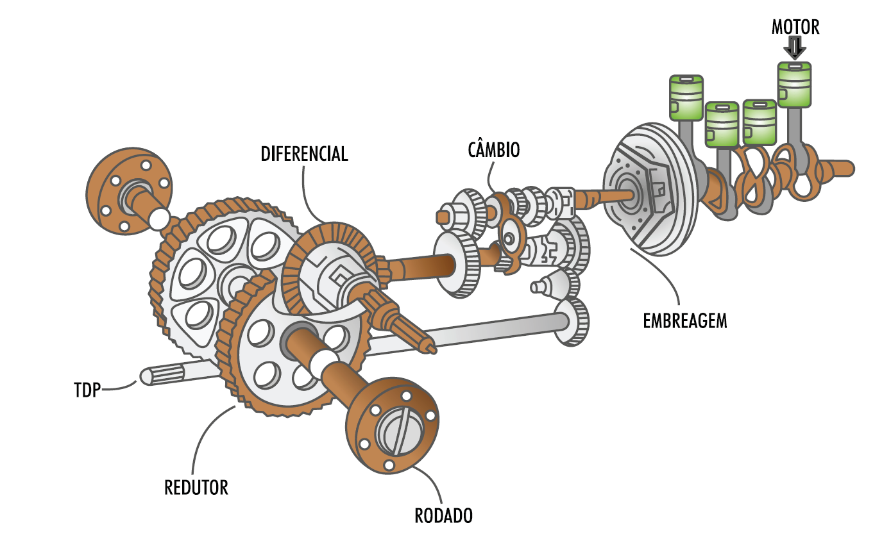
Embreagem
Embreagem
A função da embreagem é conectar e desconectar o movimento do motor com o da caixa de câmbio.
- Quando o pedal da embreagem está em sua posição normal (solto), a embreagem transmite o movimento do motor à caixa de câmbio.
- Quando ocorre o acionamento do pedal, a embreagem deixa de transmitir o movimento.
Embreagem
Embreagem de disco único (simples):
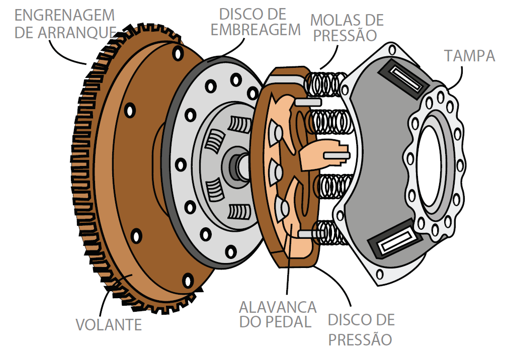
Embreagem
Embreagem de disco único (simples):
Funcionamento
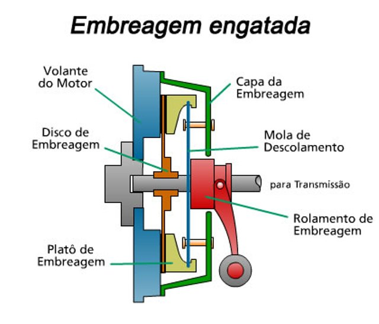
Embreagem
Embreagem de disco único (simples):
Funcionamento
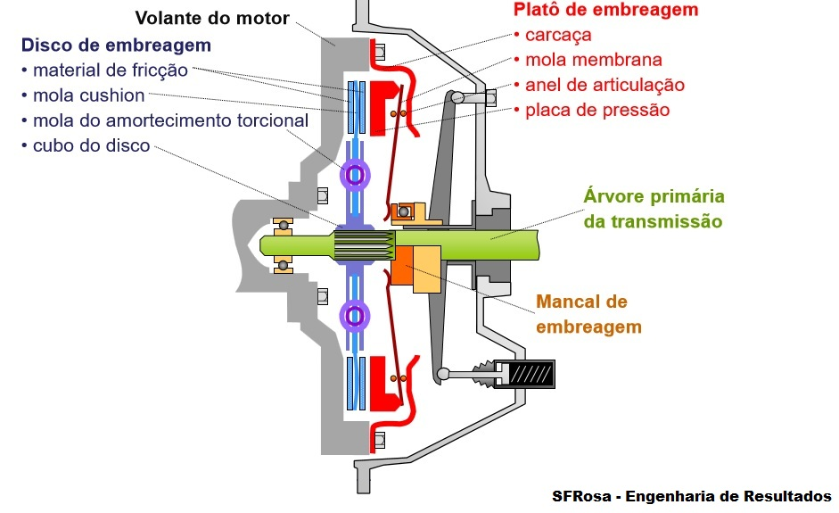
Embreagem
Embreagem de disco único (simples):
Funcionamento
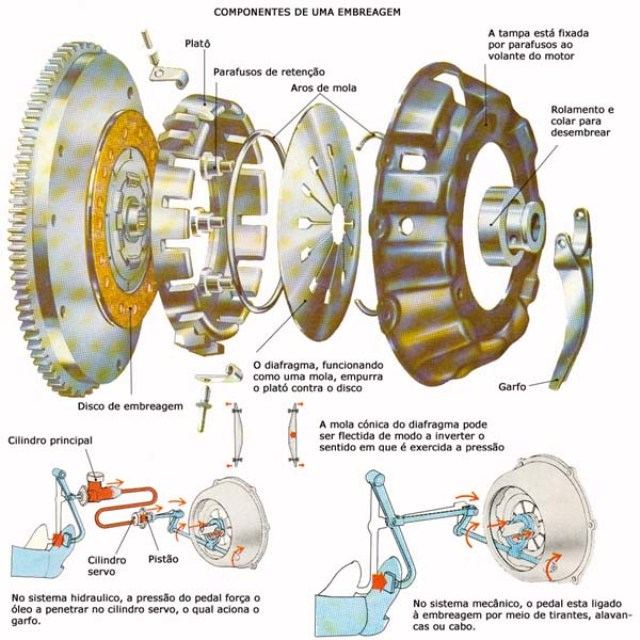
Embreagem
Embreagem de disco único (simples):
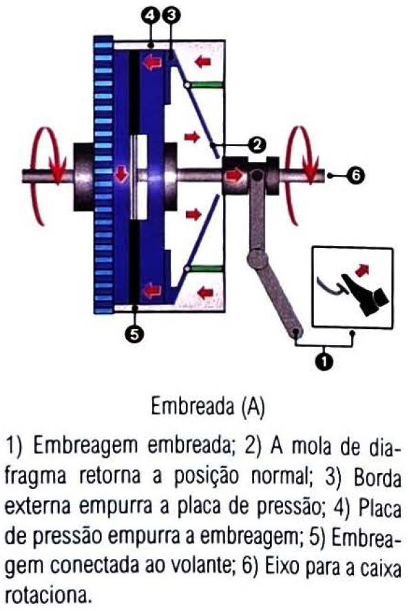
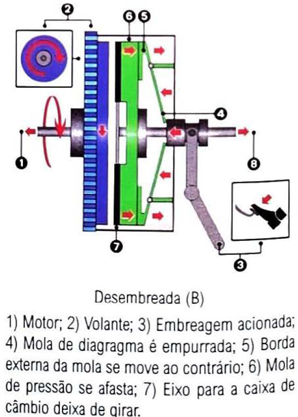
Embreagem
Embreagem de disco único (simples):
Funcionamento
A placa de pressão exerce força sobre o disco que é preso ao volante do motor. Isso permite a transferência de energia e do movimento de rotação para o sistema de transmissão.
Ao acionar o pedal, a placa de pressão libera a pressão sobre o disco, e este é desacoplado do volante.
Disco simples refere-se à quantidade de discos de embreagem no sistema (1 disco).
Controle limitado da TDP. Não é possível interromper o movimento do trator sem desligar a TDP quando ambos estão em movimento.
Embreagem
Tipos de embreagem:
- Disco simples a seco: em tratores mais simples, o acionamento provoca a parada do avanço do trator quando há a parada da TDP;
- Embreagem dupla a seco: contém dois conjuntos de discos de embreagem independentes. Possui dois estágios: o primeiro desconecta o motor da caixa de câmbio e o segundo, da TDP;
- Permite parar o movimento do trator sem parar a TDP, quando ambos estão em movimento.
Embreagem
Tipos de embreagem:
- Independente de disco duplo a seco: dois conjuntos de discos separados. Possui dispositivos independentes do pedal da embreagem para ligar ou desligar o movimento do motor à TDP;
- Alavancas, teclas ou botões (apenas para a TDP);
- Mais moderno;
- Discos múltiplos: vários discos metálicos, que aumentam a superfície de atrito.
Embreagem
Discos duplos:
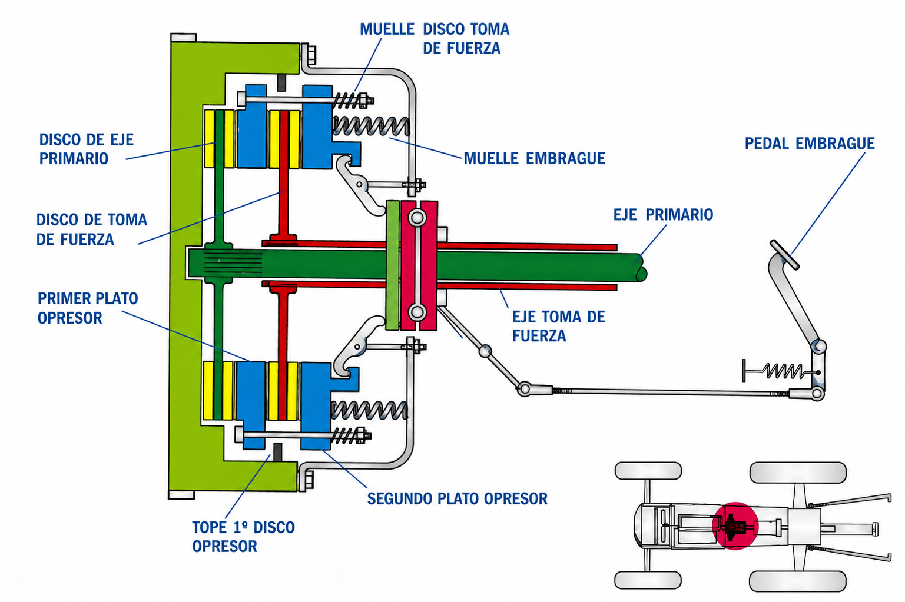
Atares e Blanca 2005
Caixa de câmbio
Caixa de câmbio
Em motores agrícolas, a potência na rotação é praticamente constante. Portanto, mesmo que a rotação seja alterada, a velocidade não mudará muito.
A alteração da velocidade e do torque é realizada por meio de mudanças de marchas (relações de engrenagens).
Para potência constante do motor, quando se aumenta o torque, tem-se a redução da velocidade, e vice-versa.
Caixa de câmbio
A principal função é facilitar a adequação da potência e do torque do trator à atividade realizada.
Permitir a alteração do sentido do deslocamento do trator (frente e ré).
Caixa de câmbio
Tratores requerem muitas marchas.
A entrega da potência máxima em velocidades de trabalho distintas requer marchas.
Caixa de câmbio - transmissão mecânica
Caixa de câmbio - transmissão mecânica
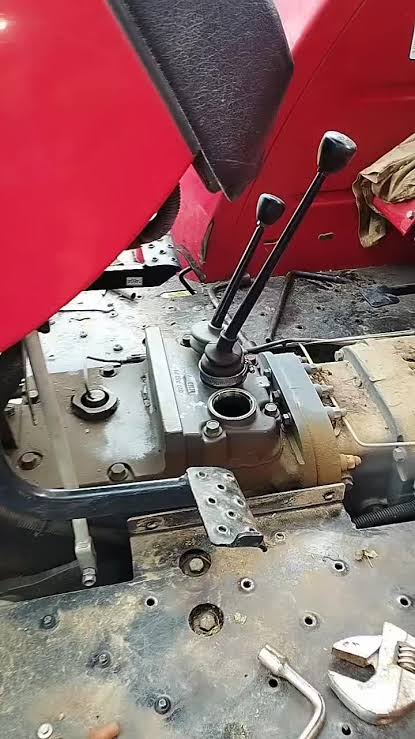
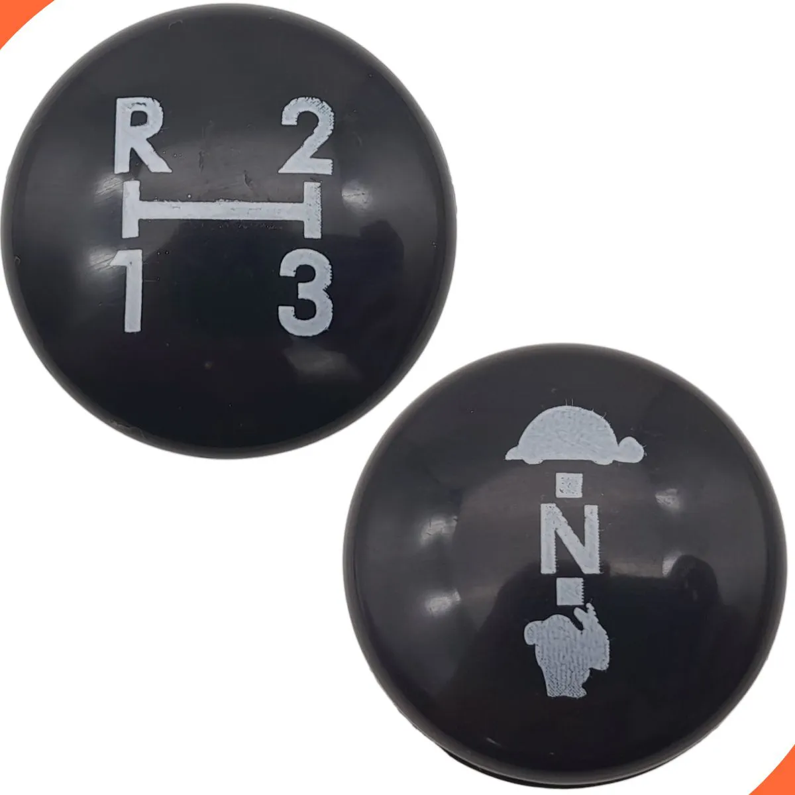
Caixa de câmbio - transmissão mecânica
Grupos de marchas:
Caixas redutoras, posicionadas antes da caixa de marchas geral.
Composta por um par de engrenagens de mesmo tamanho, que não altera o torque e a rotação. Mais um par de engrenagens, com uma engrenagem motora menor e uma movida maior, propiciando menor velocidade e maior torque.
Chamada de marchas reduzidas.
Ex: um trator com opção reduzida multiplica por 2 o número de marchas. Se há 4 marchas normais, são 8 no total para frente, mais 2 para ré.
Caixa de câmbio - transmissão mecânica
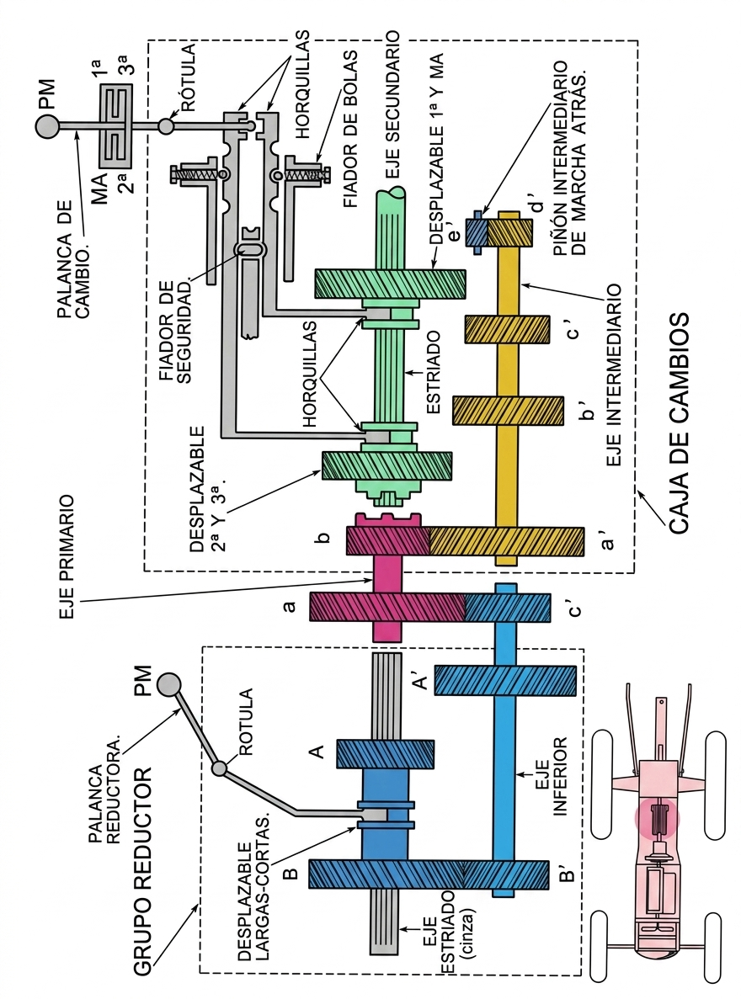
Atares e Blanca 2005
Caixa de câmbio - transmissão mecânica
Caixa reduzida:
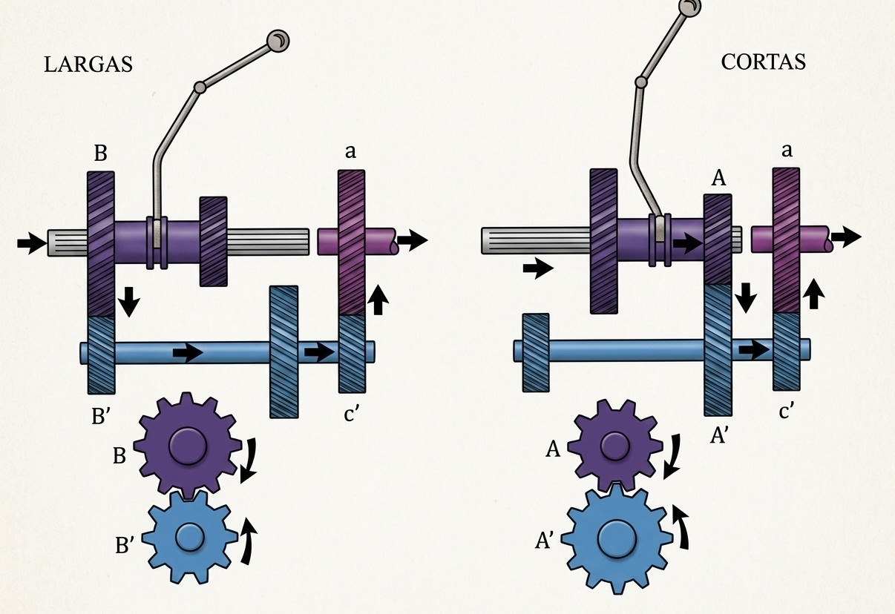
Atares e Blanca 2005
Caixa de câmbio - transmissão mecânica
Caixa principal (1ª):
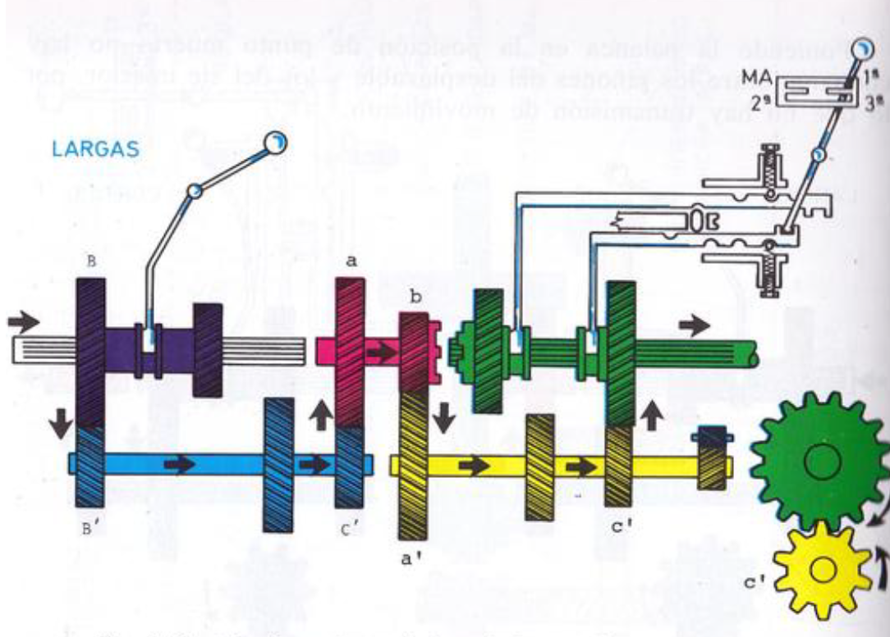
Atares e Blanca 2005
Caixa de câmbio - transmissão mecânica
Caixa principal (2ª):
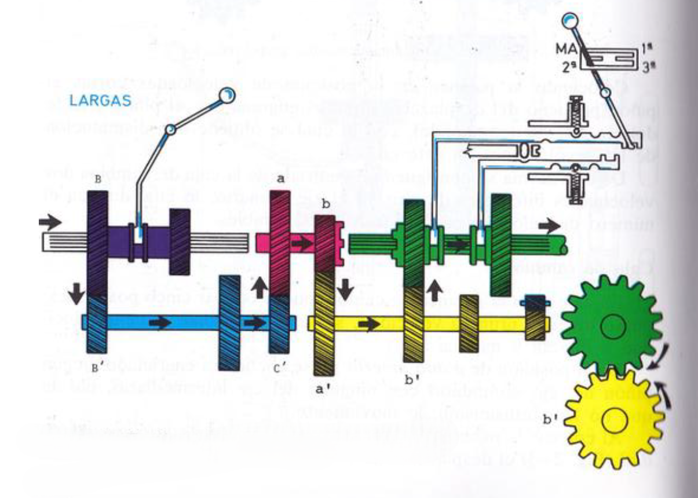
Atares e Blanca 2005
Caixa de câmbio - transmissão mecânica
Caixa principal (3ª):
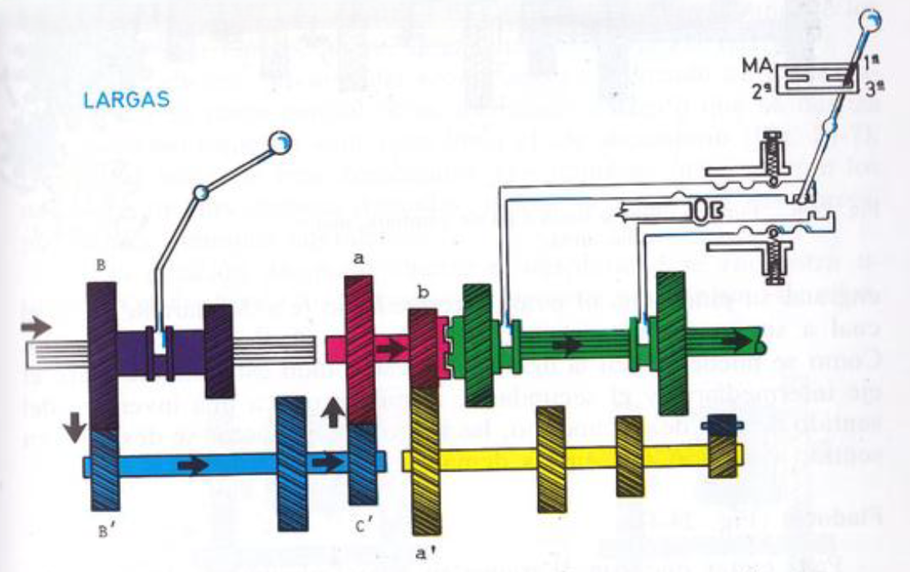
Atares e Blanca 2005
Caixa de câmbio - transmissão mecânica
Caixa principal (Ré):
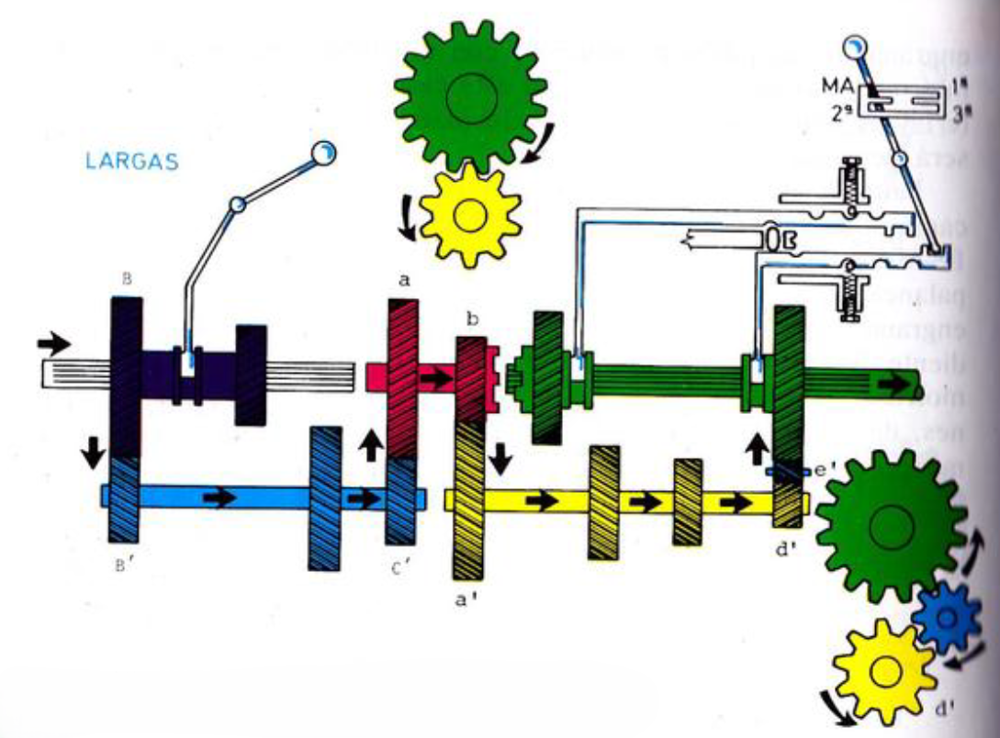
Atares e Blanca 2005
Caixa de câmbio - transmissão mecânica
Características:
É conhecida como sistema de transmissão manual.
- Troca de marchas discreta, que ocorre em intervalos específicos;
- Na caixa de câmbio “seca” (deslizante), as trocas de marcha devem ocorrer com o trator parado;
- Ou por habilidade do operador;
- As engrenagens devem estar paradas ou sincronizadas;
- Sistema mais simples;
- Engrenagens sujeitas a maior desgaste;
Caixa de câmbio
Escalonamento de marchas:
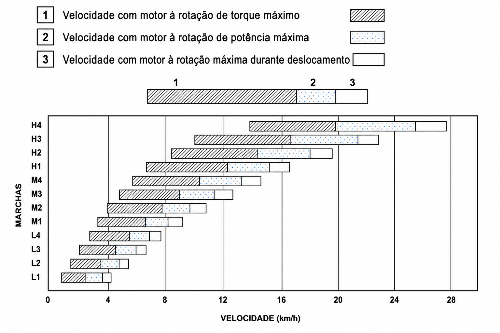
Caixa de câmbio
Escalonamento de marchas:
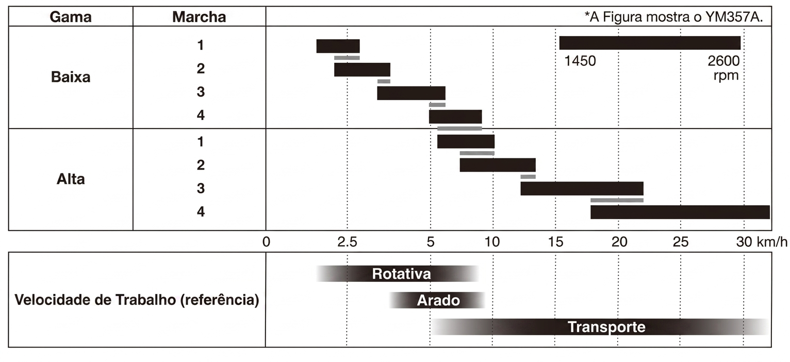
Caixa de câmbio
Escalonamento de marchas:
Se cada operação agrícola tem uma faixa de velocidade de trabalho, é o esforço exigido pelo equipamento acoplado que indica a marcha a ser utilizada.
A escolha depende da rotação do motor e da marcha utilizada.
- Quanto maior o número de marchas, maior o escalonamento;
- Maiores são as possibilidades de se adequar a velocidade e o torque ao trabalho agrícola alvo;
Caixa de câmbio
Escalonamento de marchas:
Pode ser entendido como uma escada, em que cada degrau representa uma marcha em diversas rotações do motor.
Cada degrau representa uma faixa de velocidade para determinada marcha.
Que tipo de escalonamento se busca em um trator?
Caixa de câmbio - engrenamento constante
Caixa de câmbio - engrenamento constante
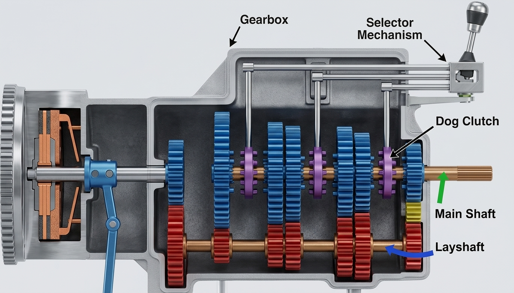
Caixa de câmbio - engrenamento constante
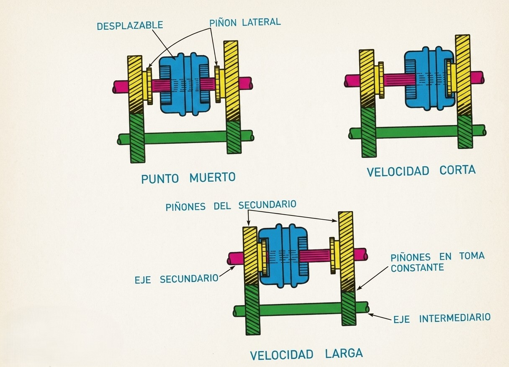
Atares e Blanca 2005
Caixa de câmbio - engrenamento constante
Todas as engrenagens estão em contato permanente umas com as outras.
- Giram livremente nos eixos, mas precisam ser ativadas para transmitir potência;
- A mudança de marcha ocorre com o operador desembreando, selecionando a marcha e embreando novamente;
- Transmissão suave e silenciosa;
- Mudanças rápidas;
Caixa de câmbio - engrenamento constante
Com sincronizador:
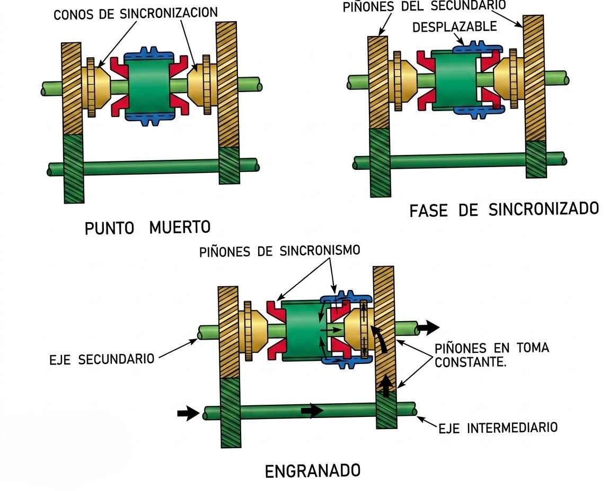
Atares e Blanca 2005
Caixa de câmbio - engrenamento constante
Com sincronizador:
- Operam sob engrenamento constante;
- Incorporam sincronizadores, projetados para igualar as velocidades das engrenagens;
- Facilitar a troca e deixá-la mais suave;
- Permite a troca de marcha mesmo quando as velocidades de rotação das engrenagens e do eixo de transmissão não estão perfeitamente alinhadas;
- Apenas um par de engrenagens é ativado a cada troca (as demais giram livremente);
- Troca de marcha sem necessidade de parar o trator;
- Potência temporariamente interrompida.
Caixa de câmbio - powershift
Caixa de câmbio - powershift
Características:
- Transmissão mecânica do tipo “transmissões sob carga”;
- Capacidade de realizar trocas de marcha sem interromper a transmissão de potência do motor para as rodas motrizes;
- As marchas são trocadas por meio de embreagens multidiscos com controle hidráulico;
- Trocas rápidas e suaves, sem necessidade de usar a embreagem;
- Embreagens acoplam e desacoplam as marchas;
- Conjunto de engrenagens planetárias;
- Engrenagens satélites que giram em torno de uma engrenagem central (solar);
- Engrenagens de múltiplos estágios.
Caixa de câmbio - powershift
Características:
Durante a troca de marchas, uma embreagem desengata a marcha atual e outra engata a marcha desejada. Não há interrupção do fluxo de energia.
Caixa de câmbio - powershift
Engrenagem planetária:
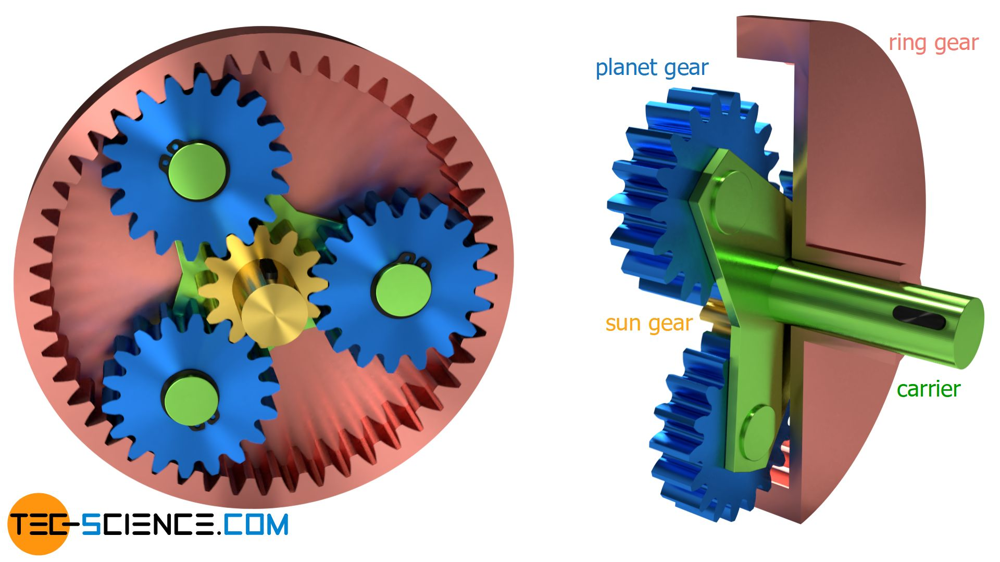
Caixa de câmbio - powershift
Engrenagem planetária - ex:
- Engrenagem sol (sun gear): 18 dentes (teeth);
- Engrenagem anel (ring gear): 43 dentes;
- Sistema planetário (planetary carrier): 61 dentes (18 + 43).
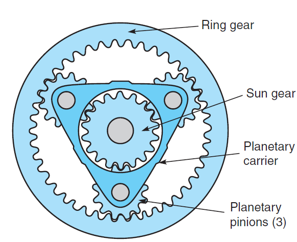
Caixa de câmbio - powershift
Engrenagem planetária - redução máxima de velocidade:
Para obter a máxima redução de velocidade em um conjunto de engrenagens planetárias simples, a engrenagem solar deve ser o elemento de entrada, e a engrenagem anel deve ser o elemento fixo ou travado. Isso torna automaticamente o porta-satélites o elemento de saída. Isso produz o aumento máximo de torque e faz com que o porta-satélites gire no mesmo sentido que a engrenagem solar.
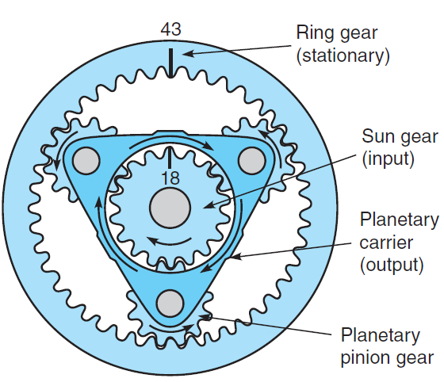
Caixa de câmbio - powershift
Engrenagem planetária - redução máxima de velocidade:
- Engrenagem sol (sun gear): 18 dentes (teeth);
- Engrenagem anel (ring gear): 43 dentes;
- Sistema planetário (planetary carrier): 61 dentes (18 + 43).
\[Relação= \frac{61}{18}= 3.388889:1\]
Caixa de câmbio - powershift
Engrenagem planetária - redução mínima de velocidade:
O porta-satélites planetário continua sendo a saída. A engrenagem solar passa a ser o elemento estacionário, enquanto a coroa passa a ser a entrada. O sentido de rotação é o mesmo da entrada, com uma redução de transmissão mínima. Essa é a segunda menor relação de transmissão que pode ser obtida em um conjunto de engrenagens planetárias simples, proporcionando aumento de torque.
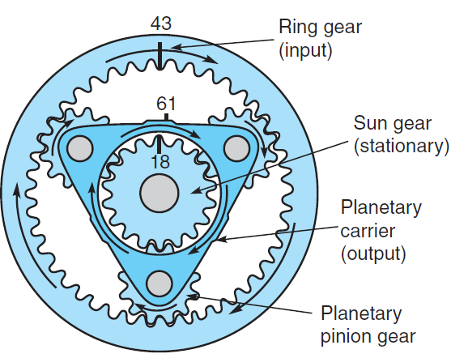
Caixa de câmbio - powershift
Engrenagem planetária - redução mínima de velocidade:
- Engrenagem sol (sun gear): 18 dentes (teeth);
- Engrenagem anel (ring gear): 43 dentes;
- Sistema planetário (planetary carrier): 61 dentes (18 + 43).
\[Relação= \frac{61}{43}= 1.418605:1\]
Caixa de câmbio - powershift
Engrenagem planetária - velocidade máxima:
A engrenagem com o maior número de dentes deve ser utilizada como entrada. O porta-satélites é sempre o componente com o maior número de dentes. Portanto, deve ser utilizado como elemento de entrada (sobremarcha = overdrive). Dependendo de qual elemento permanece travado, a engrenagem solar ou a coroa proporcionará uma maior relação de sobremarcha.
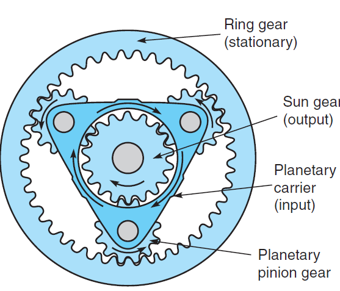
Caixa de câmbio - powershift
Engrenagem planetária - velocidade máxima:
- Engrenagem sol (sun gear): 18 dentes (teeth);
- Engrenagem anel (ring gear): 43 dentes;
- Sistema planetário (planetary carrier): 61 dentes (18 + 43).
\[Relação= \frac{18}{61}= 0.295082:1\]
Caixa de câmbio - powershift
Operações do sistema de engrenagens planetárias:
| Name | Nome | Característica |
|---|---|---|
| Maximum Speed Reduction | Redução máxima de velocidade | Maior redução e maior aumento de torque |
| Minimum Speed Reduction | Redução mínima de velocidade | Menor redução e aumento de torque |
| Maximum Speed Increase | Aumento máximo de velocidade | Maior sobremarcha (overdrive) |
| Minimum Speed Increase | Aumento mínimo de velocidade | Menor sobremarcha |
| Speed Reduction – Reverse Direction | Redução de velocidade – sentido inverso | Redução com inversão do sentido |
| Speed Increase – Reverse Direction | Aumento de velocidade – sentido inverso | Aumento de velocidade com inversão do sentido |
| Direct Drive | Transmissão direta (1:1) | Entrada e saída na mesma velocidade |
| Neutral Condition | Condição de neutro | Não há transmissão de movimento |
Caixa de câmbio - powershift
Leis de operação da engrenagem planetária simples:
| Engrenagem solar | Porta-satélites | Coroa | Velocidade | Torque | Sentido de rotação |
|---|---|---|---|---|---|
| 1. Entrada | Saída | Travada | Redução máxima | Aumento | Igual à entrada |
| 2. Travada | Saída | Entrada | Redução mínima | Aumento | Igual à entrada |
| 3. Saída | Entrada | Travada | Aumento máximo | Redução | Igual à entrada |
| 4. Travada | Entrada | Saída | Aumento mínimo | Redução | Igual à entrada |
| 5. Entrada | Travada | Saída | Redução | Aumento | Inverso ao da entrada |
| 6. Saída | Travada | Entrada | Aumento | Redução | Inverso ao da entrada |
Quando dois elementos são mantidos juntos, a velocidade e o sentido de rotação são iguais aos da entrada, resultando em uma transmissão direta (1:1).
Quando nenhum elemento é mantido ou travado, não é possível transmitir movimento para a saída, resultando em uma condição de neutro.
Caixa de câmbio - powershift
Sistema de engrenagens planetárias:
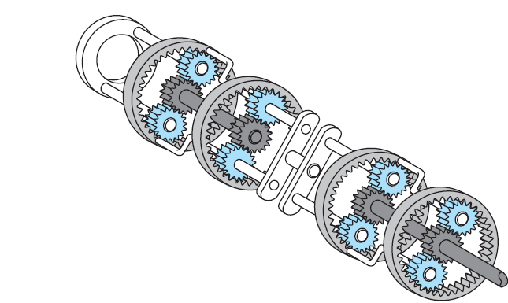
Caixa de câmbio - powershift
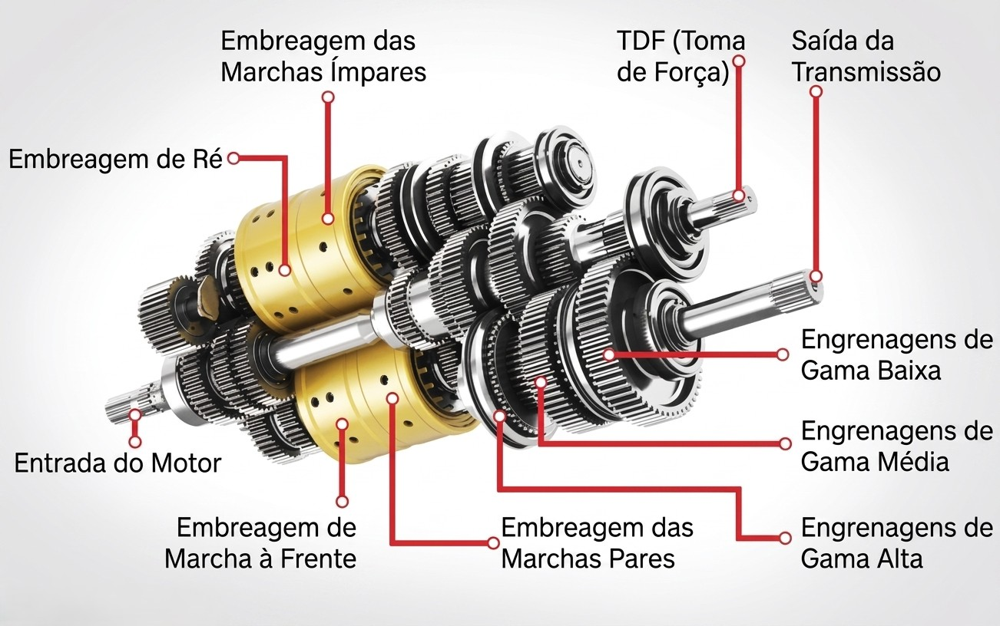
Caixa de câmbio - powershift
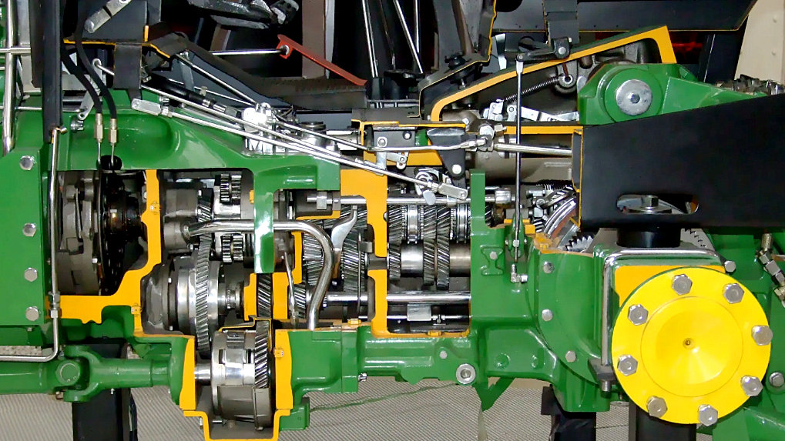
Caixa de câmbio
Grupos de marchas:
Uma melhoria da marcha reduzida foi a caixa com diferentes relações (gamas).
- Permite 3 ou 4 relações de transmissão em vez de apenas duas;
- Indicadas como: L (low), M (medium), H (high), R (reverse);
- Também indicadas por: A, B, C, D e R;
- Atualmente, os tratores podem contar com 24, 36 e até 48 marchas.
Ex: para um trator possuir 20 marchas para frente, basta ter duas caixas, uma com 5 velocidades (1ª até 5ª) e outra com 4 grupos (A, B, C e D).
Caixa de câmbio
Inversor:
Possibilita inverter o sentido do curso simplesmente atuando em uma alavanca (inverte o sentido de todas as marchas).
Super redutor:
Localizado na frente da caixa de marchas, utiliza pares de engrenagens com grandes reduções, permitindo velocidades baixíssimas. Específico para algumas culturas (ex: café).
Caixa de câmbio
Grupos de marchas:

Caixa de câmbio - hidrostático
Caixa de câmbio - hidrostático
Utiliza uma bomba e um motor para controlar a velocidade e a direção do trator por meio do fluxo de óleo. Opções mais suaves de troca de velocidade.
Converte energia mecânica em energia hidráulica (pressão de óleo) e novamente em energia mecânica.
Caixa de câmbio - hidrostático
Caixa de câmbio - hidrostático
Quando a alavanca distribuidora não é acionada, o óleo chega ao distribuidor e retorna ao tanque através do filtro magnético.
Quando a alavanca é puxada, o óleo chega ao distribuidor e sai dele em alta pressão, indo em direção a uma das entradas do motor hidrostático reversível, fazendo com que ele gire em uma direção.
O óleo não pressurizado sai do motor, chega novamente ao distribuidor e, através do filtro magnético, chega ao tanque.
Caixa de câmbio - CVT
Caixa de câmbio - CVT
Transmissão continuamente variável
Permite variabilidade “infinita” entre as relações de transmissão dentro de uma faixa específica.
A transmissão CVT varia continuamente a relação de transmissão (com sensores, polias e correias ou acionamento hidrostático).
Caixa de câmbio - CVT
É construída por duas polias, uma conectada ao virabrequim e outra ao restante do sistema. Também usa um conjunto de engrenagens planetário.
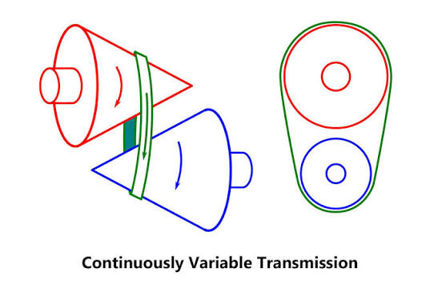
Caixa de câmbio - CVT
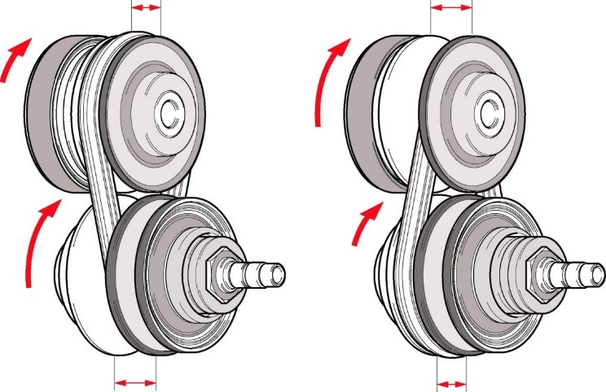
Caixa de câmbio - CVT
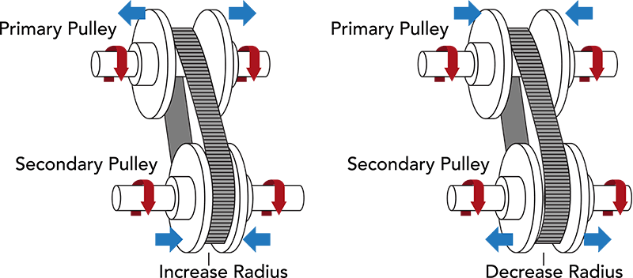
Caixa de câmbio
Consumo de combustível powershift vs. CVT
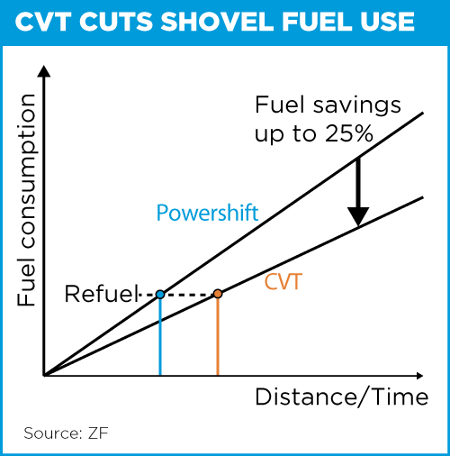
Eixo traseiro
Eixo traseiro
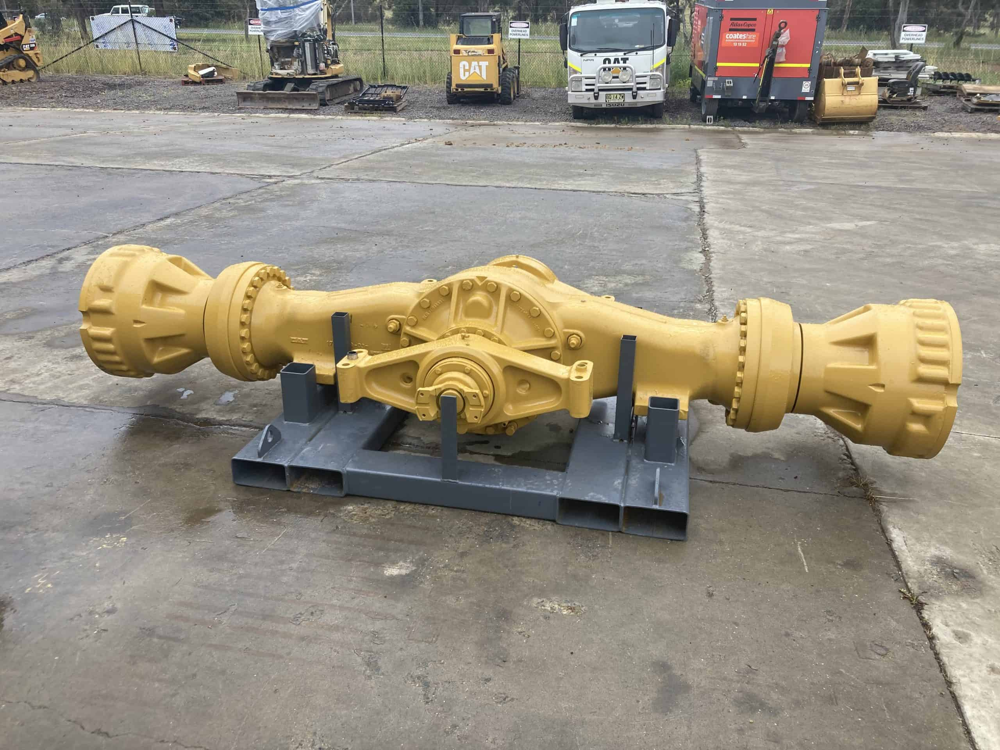
Eixo traseiro
É responsável por conectar as rodas traseiras, transmitindo a potência do motor para as rodas.
Elementos:
- Carcaça: estrutura que abriga os componentes internos do eixo traseiro e fornece suporte e proteção.
- Diferencial: permite movimento independente entre as rodas traseiras;
- Semieixos: transmitem a potência do motor para as rodas traseiras, estando conectados ao diferencial;
- Redução final: ajusta a velocidade de rotação das rodas, reduzindo-a e ampliando o torque;
- Freios: às vezes integrados ao eixo traseiro, permitem a parada ou desaceleração.
Diferencial
Diferencial
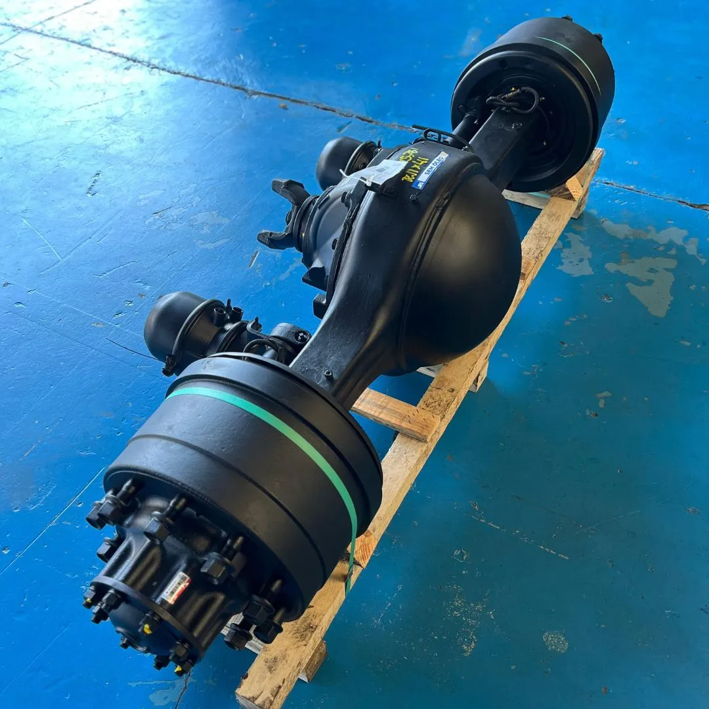
Diferencial
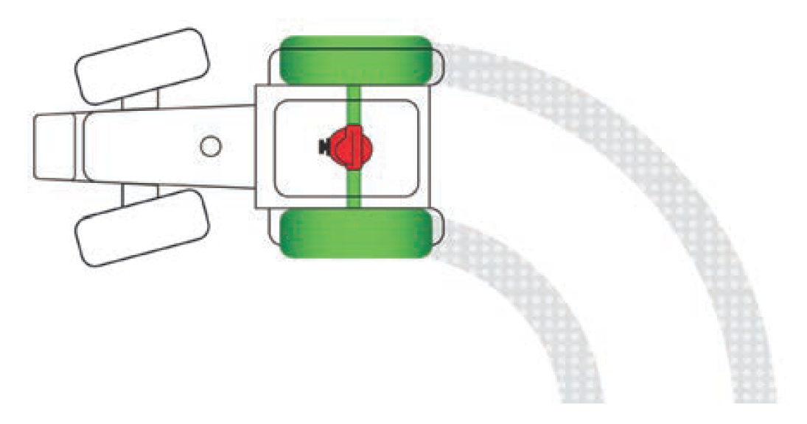
Qual a diferença de giro entre os pneus?
Diferencial
Função:
- Permitir diferentes velocidades de rotação para cada uma das rodas;
- Facilitando as manobras;
- Alterar o ângulo de rotação em 90º do motor para as rodas;
- Aumentar o torque nas rodas motrizes do trator;
- Relação de 4 ou 5 para 1.
Diferencial
Elementos:
- Pinhão: engrenagem ligada ao eixo secundário da caixa de câmbio e engrenada à coroa.
- Recebe o movimento vindo da caixa de câmbio e o transfere para a coroa, alterando o sentido do movimento em 90°;
- Coroa: engrenagem de maior tamanho no diferencial. Ligada à caixa de satélites.
- Recebe o movimento do pinhão, altera o movimento e proporciona aumento do torque para as rodas motrizes;
Diferencial
Elementos:
- Satélites: de 2 a 4, localizados dentro de uma caixa e com seus eixos presos a ela;
- Planetárias: 2, responsáveis por transmitir o movimento às rodas motrizes direita e esquerda. São conectadas aos satélites.
- Eixos de rotação perpendiculares aos dos satélites.
Diferencial
Funcionamento:
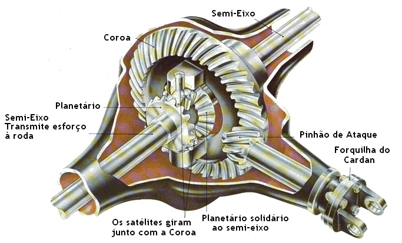
Diferencial
Funcionamento:
Diferencial
aoqueio:
Em algumas situações, é desejável que o diferencial não permita que as rodas tenham compensação de movimento.
Ex: aração, quando o trator trafega com as rodas de um lado sobre o solo arado e as do outro lado sobre o solo firme.
- Maior patinação no lado arado;
- Prejudica a eficiência de tração;
O bloqueio do diferencial tem a função de travar o giro independente entre os rodados.
Diferencial
Bloqueio:
O bloqueio deve ser utilizado apenas em deslocamento em linha reta.
Tipos de bloqueio:
- Bloqueio mecânico: mais simples, utiliza mecanismos físicos para conectar as duas rodas;
- Engrenagens ou discos de fricção;
- Robusto e confiável;
- Menos suave.
Diferencial
Bloqueio:
Tipos de bloqueio:
- Bloqueio hidráulico: utiliza fluido hidráulico para transferir potência entre as rodas;
- Embreagens hidráulicas que conectam as duas rodas;
- Mais suave;
- Bloqueio eletrônico: controle via interruptor com acionadores elétricos;
- Bloqueio automático: diferencial autoblocante. Distribui de forma automática a potência entre as rodas a depender da aderência;
- Envia mais potência para a roda com maior aderência (dispensa bloqueio manual).
Diferencial
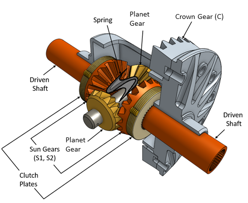
Diferencial
Redução final
Redução final
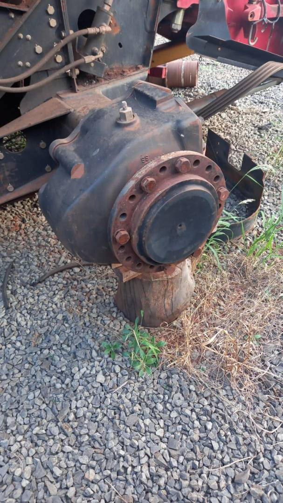
Redução final
Função:
Sistema de engrenagens na saída dos semieixos, próximo às rodas.
- Finalidade de reduzir (ainda mais) o movimento que vem do diferencial;
- Ampliação do torque;
- Redução da velocidade.
Redução final
Função:
Redução de 5:1, ou seja, aumento do torque em 5 vezes.
Redução final somada ao diferencial leva a uma “redução” de 20 a 30:1.
A redução final pode ser composta por um sistema de engrenagens do tipo planetário.
Redução final
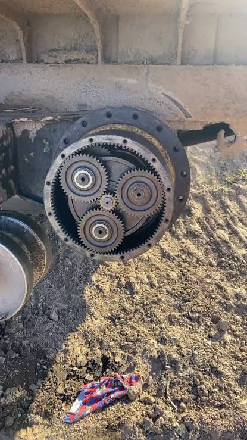
Relações fundamentais
Relações fundamentais
\[\tau_m * n_m * E_t= \tau_r*n_r \approx constante \]
O \(\tau_m\) é o torque do motor; O \(n_m\) é a rotação do motor; \(E_t\) é a eficiência de transmissão; \(\tau_t\) é torque do rodado; \(n_r\) é a rotação do rodado;
torque por rotação é a potência do motor.
Eficiência de transmissão
\[E_t = \frac{P_r}{P_m}\]
\(P_r\) potência final (rodado); \(P_m\) potência de entrada (motor);
Relações fundamentais
\[P_b=F*V=E_r*P_r\]
\(P_b\) é a potência na barra de tração; \(F\) é a força; \(V\) é a velocidade; \(E_r\) é a eficiência do rodado; \(P_r\) é a poténcia do rodado;
\[E_r=\frac{P_b}{P_r}\]
\(E_r\) é a eficiência de tração; \(P_b\) é a potência na barra; \(P_r\) é a potência no radado;
\[P_b = P_m * E_t * E_r\]
Relações fundamentais
Rendimento tratório
\[\eta= \frac{P_b}{P_m}\]
Quanto da potência do motor foi para a barra, após “negociação” com o solo.
Exemplos
Exemplos
Dados:
- Rotação do motor: 1950 rpm;
- torque do motor: 200 Nm;
- Relação de transmissão da 4ª marcha: 2,1:1;
- Relação de transmissão do diferencial: 6:1;
- Relação na redução final: 3,95:1;
- Diâmetro dos pneus traseiros: 1100 mm;
- Eficiência de transmissão: 97%;
- Cada conjunto: caixa, diferencial, redução final.
- Rendimento tratório: 70%.
Pergunta:
- Qual a velocidade?
- Qual o torque do rodado?
- Qual a potência no rodado?
- Qual a potência na barra de tração?
Exemplos
Velocidade:
\[i= 2,1*6*3.95= 49,77\]
\[velocidade = \frac{1950}{49,77}=39,18~rpm~(0,653rps)\]
\[Perímetro_{roda}= 1,1~m*\pi= 3,456~m\]
\[V=0,653~rps*3,456~m= 2,26m/s\]
Exemplos
Torque do rodado:
Eficiência de transmissão para cada conjunsto (Et3)
\[E_t= 0,97^3=0,913\]
Eficiência de transmissão para cada conjunsto (Et3)
\[\tau_r= \frac{200~Nm*39,18~rpm*0,97^3}{39,18}=9087,7~Nm\]
Exemplos
Potência do rodado:
\[P_r= \frac{2*\pi * 39,18~rpm * 9084,7~Nm}{60}= 37273,8~W~ou~37,27kW\]
Exemplos
Potência na barra de tração:
\[n_m= \frac{1950}{60}=32,5~rps\]
\[P_m= 2*\pi*32,5~rps*200~Nm= 40,48~kW\]
\[P_b= 0,70*40,48~kW=28,59~kW\]
Próxima aula…
Próxima aula…
Rodados, pneus, bitola e lastro!
Fim!